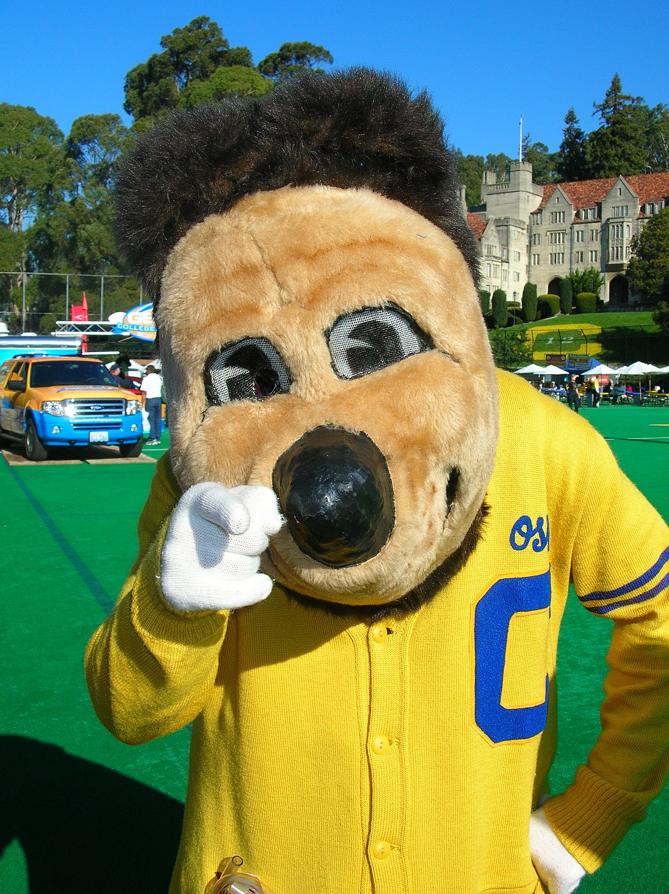
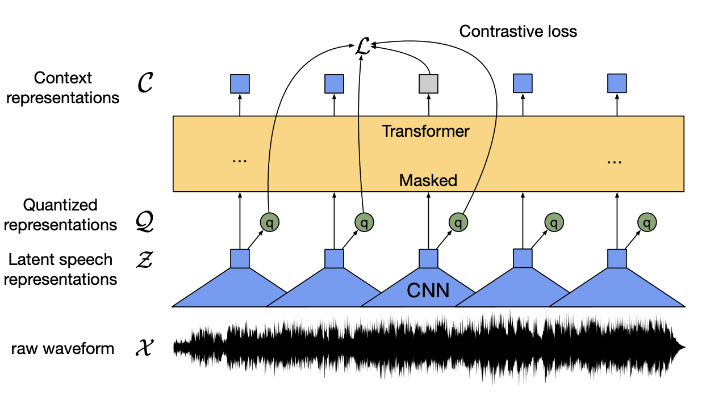

Oski
Student @ UC Berkeley
Berkeley, CA, USA
oski@berkeley.edu
oski
Papers read: 100
Avg. Citations: 1234
Following Categories:
- Speech Processing
- Computer Vision
- Natural Language Processing
- Reinforcement Learning
Papers in Category:
-
wav2vec 2.0: A Framework for Self-Supervised Learning of Speech Representations
-
HuBERT: Self-Supervised Speech Representation Learning by Masked Prediction of Hidden Units
-
Conv-TasNet: Surpassing Ideal Time-Frequency Magnitude Masking for Speech Separation
-
AV-data2vec: Self-supervised Learning of Audio-Visual Speech Representations with Contextualized Target Representations
-
Attention is All You Need in Speech Separation
-
Wavesplit: End-to-End Speech Separation by Speaker Clustering

HuBERT: Self-Supervised Speech Representation
Learning by Masked Prediction of Hidden Units
Abstract:
Self-supervised approaches for speech representation learning are challenged by three unique problems: (1) there
are multiple sound units in each input utterance, (2) there is
no lexicon of input sound units during the pre-training phase,
and (3) sound units have variable lengths with no explicit
segmentation. To deal with these three problems, we propose
the Hidden-Unit BERT (HuBERT) approach for self-supervised
speech representation learning, which utilizes an offline clustering
step to provide aligned target labels for a BERT-like prediction
loss. A key ingredient of our approach is applying the prediction
loss over the masked regions only, which forces the model to learn
a combined acoustic and language model over the continuous
inputs. HuBERT relies primarily on the consistency of the
unsupervised clustering step rather than the intrinsic quality
of the assigned cluster labels. Starting with a simple k-means
teacher of 100 clusters, and using two iterations of clustering, the
HuBERT model either matches or improves upon the state-ofthe-art wav2vec 2.0 performance on the Librispeech (960h) and
Libri-light (60,000h) benchmarks with 10min, 1h, 10h, 100h, and
960h fine-tuning subsets. Using a 1B parameter model, HuBERT
shows up to 19% and 13% relative WER reduction on the more
challenging dev-other and test-other evaluation subsets.
1. Introduction
2. Method
3. Related Work
4. Experimental Details: